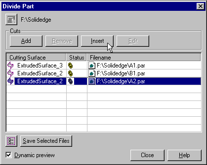
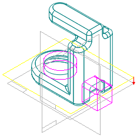
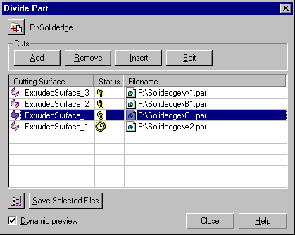
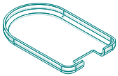

Example: Insert a new division
To insert a new division between existing ones, click a division on the Divide Part dialog box and then click the Insert button.

Next select a reference plane or construction surface where the new division will be located. Then select the side for the new part division.

Key in a part file name for the new division and then save the selected file.

The resultant file is shown below.
